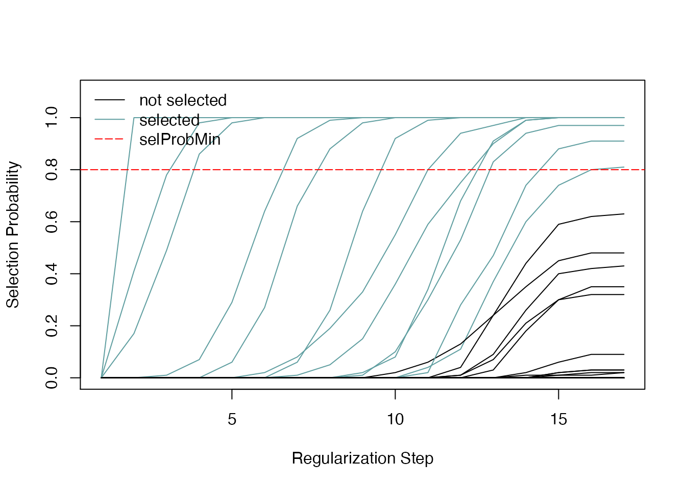
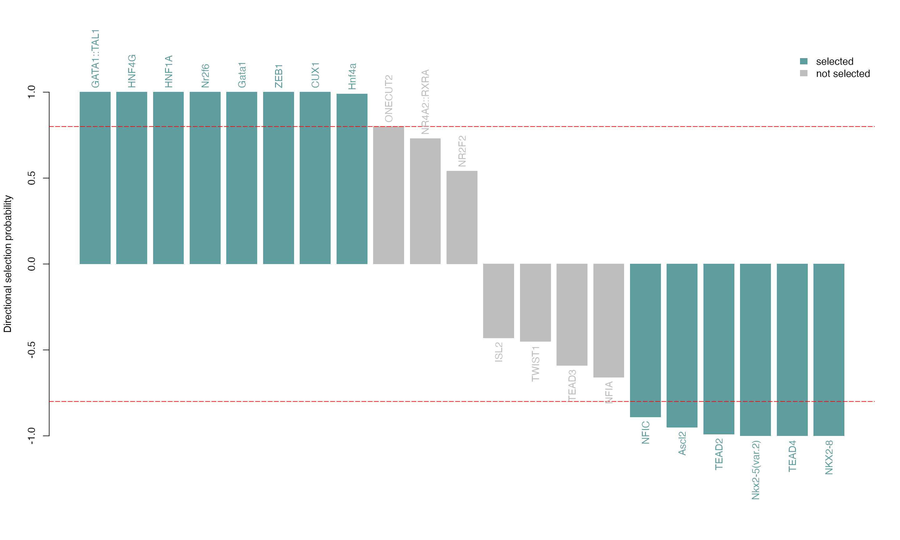
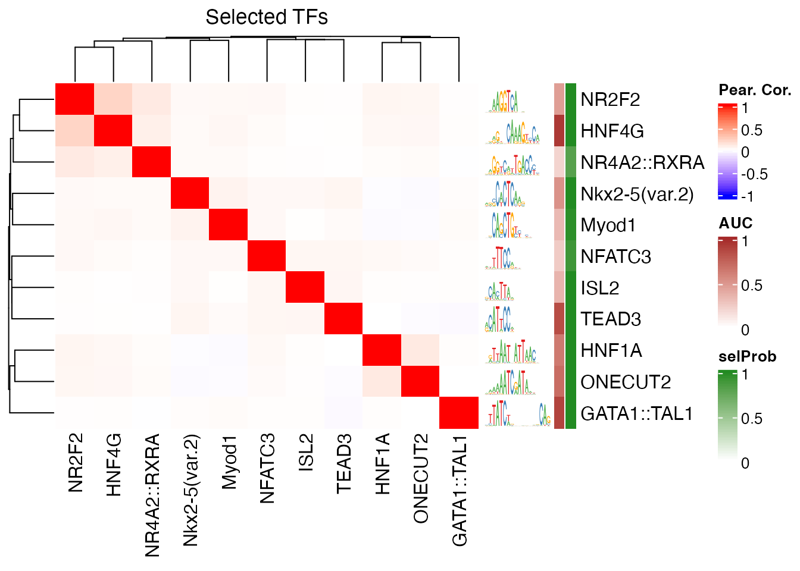

monaLisa - MOtif aNAlysis with Lisa
Dania Machlab, Lukas Burger, Michael Stadler
2021-04-17
monaLisa.Rmd
Introduction
monaLisa is a collection of functions for working with biological sequences and motifs that represent the binding preferences of transcription factors or nucleic acid binding proteins.
For example, monaLisa can be used to conveniently find motif hits in sequences (see section @ref(findhits)), or to identify motifs that are likely associated to observed experimental data. This analysis is supposed to provide potential answers to the question “Which transcription factors are the drivers of my observed changes in expression/methylation/accessiblity?”.
You can use known motifs from collections of transcription factor binding specificities such as JASPAR2018, also available from Bioconductor. Genomic regions could be for example promoters, enhancers or accessible regions for which experimental data is available.
Two independent approaches are implemented to identify interesting motifs:
In binned motif enrichment analysis (
calcBinnedMotifEnr(), see section @ref(binned)), genomic regions are grouped into bins according to a numerical value assigned to each region, such as change of expression, accessibility or methylation. Motif enrichments are then calculated for each bin, normalizing for differences in sequence composition very similarly as it was originally done by Homer.In randomized Lasso stability selection (
randLassoStabSel(), see section @ref(stabsel)),monaLisauses a robust regression approach to predict what transcription factors can explain experimental measurements, for example changes in chromatin accessibility between two conditions. Also this approach allows to correct for sequence composition. In addition, similar motifs have to “compete” with each other to be selected.
For both approaches, functions that allow visualization of obtained results are provided.
If you prefer to jump right in, you can continue with section @ref(quick) that shows a quick hypothetical example of how to run a binned motif enrichment analysis. If you prefer to actually compute enrichments on real data, you can find below detailed examples for a binned motif enrichment analysis (section @ref(binned)) and randomized Lasso stability selection (section @ref(stabsel)).
Quick example: Identify enriched motifs in bins
# load package
library(monaLisa)
# bin regions
# (peak_change is a numerical vector)
peak_bins <- bin(x = peak_change, binmode = "equalN", nElement = 400)
# calculate motif enrichments
# (peak_seq is a DNAStringSet, pwms is a PWMatrixList)
se <- calcBinnedMotifEnr(seqs = peaks_seqs,
bins = peaks_bins,
motifs = pwms)se is a SummarizedExperiment with assays p, FDR, enr, log2enr, sumForegroundWgtWithHits and sumBackgroundWgtWithHits, each containing a matrix with motifs (rows) by bins (columns). The values are:
-
p: the raw P value (\(-\log_{10} p\)) of a given motif enrichment in a given bin. Each P value results from an enrichment calculation comparing occurrences of each motif in the bin to its occurrences in all other bins as a background.
-
FDR: Same as p but adjusted for multiple testing using the method of Benjamini and Hochberg, 1995 (
p.adjust(..., method="fdr").
- enr: Motif enrichments, calculated as: \(enr = (o - e) / \sqrt e\), where \(o\) and \(e\) are the observed and expected numbers of regions in the bin containing a given motif. These enrichments correspond to \(z\) values (\(z = (z - \mu)/\sigma\)), assuming that the numbers of regions in a bin that contain a motif are independent Poisson random variables with mean and variance \(e\).
-
log2enr: Motif enrichments, calculated as: \(log2enr = log2((o + 8)/(e + 8))\), where \(o\) and \(e\) are the observed and expected numbers of regions in the bin containing a given motif.
- sumForegroundWgtWithHits and sumBackgroundWgtWithHits: Are the sum of foreground and background sequences that have at least one occurrence of the motif, respectively. The background sequences are weighted in order to adjust for differences in sequence composition between foreground and background.
In addition, rowData(se) and colData(se) give information about the used motifs and bins, respectively. In metadata(se) you can find information about parameter values.
Binned motif enrichment analysis: Finding TFs enriched in differentially methylated regions
This example is based on an in vitro differentiation system, in which mouse embryonic stem (ES) cells are differentiated into neuronal progenitors (NP). In an earlier study (Stadler et al. 2011), we have analyzed the genome-wide CpG methylation patterns in these cell types and identified so called low methylated regions (LMRs), that have reduced methylation levels and correspond to regions bound by transcription factors.
We also developed a tool that systematically identifies such regions from genome-wide methylation data (Burger et al. 2013). Interestingly, a change in methylation of LMRs is indicative of altered transcription factor binding. We will therefore use these regions to identify transcription factor motifs that are enriched or depleted in LMR regions that change their methylation between ES and NP cell states.
Load library
We start by loading the needed libraries:
library(GenomicRanges)
library(SummarizedExperiment)
library(JASPAR2018)
library(TFBSTools)
library(BSgenome.Mmusculus.UCSC.mm10)
library(monaLisa)Genomic regions of interest
monaLisa contains a file with genomic coordinates (mouse mm9 assembly) of LMRs, with the respective changes of methylation:
lmrfile <- system.file("extdata", "LMRsESNPmerged.gr.rds", package = "monaLisa")
lmr <- readRDS(lmrfile)
lmr
#> GRanges object with 45414 ranges and 1 metadata column:
#> seqnames ranges strand | deltaMeth
#> <Rle> <IRanges> <Rle> | <numeric>
#> [1] chr1 3549153-3550201 * | 0.3190299
#> [2] chr1 3680914-3682164 * | 0.0657352
#> [3] chr1 3913315-3914523 * | 0.4803313
#> [4] chr1 3953500-3954157 * | 0.4504727
#> [5] chr1 4150457-4151567 * | 0.5014768
#> ... ... ... ... . ...
#> [45410] chrY 4196254-4196510 * | -0.020020382
#> [45411] chrY 4193654-4194152 * | -0.102559935
#> [45412] chrY 4190208-4192766 * | -0.031668206
#> [45413] chrY 4188072-4188924 * | 0.130623049
#> [45414] chrY 4181867-4182624 * | 0.000494588
#> -------
#> seqinfo: 21 sequences from an unspecified genome; no seqlengthsYou can see there are 45414 LMRs, most of which gain methylation between ES and NP stages:
hist(lmr$deltaMeth, 100, col = "gray", main = "",
xlab = "Change of methylation (NP - ES)", ylab = "Number of LMRs")
In order to keep the computation time reasonable, we’ll select 10,000 of the LMRs randomly:
Bin genomic regions
Now let’s bin our LMRs by how much they change methylation, using the bin function. We are not interested in small changes of methylation, say less than 0.3, so we’ll use the minAbsX argument to create a no-change bin in [-0.3, 0.3). The remaining LMRs are put into bins of 800 each:
bins <- bin(x = lmrsel$deltaMeth, binmode = "equalN", nElement = 800, minAbsX = 0.3)
table(bins)
#> bins
#> [-0.935,-0.242] (-0.242,0.327] (0.327,0.388] (0.388,0.443] (0.443,0.491]
#> 800 4400 800 800 800
#> (0.491,0.536] (0.536,0.585] (0.585,0.862]
#> 800 800 800Because of the asymmetry of methylation changes, there is only a single bin with LMRs that lost methylation and many that gained:
plotBinDensity(lmrsel$deltaMeth, bins, legend = "topleft")
Note that the bin-breaks around the no-change bin are not exactly -0.3 to 0.3. They have been adjusted to have the required 800 LMRs per bin.
Prepare motif enrichment analysis
Next we prepare the motif enrichment analysis. We first need known motifs representing transcription factor binding site preferences. We extract all vertebrate motifs from the JASPAR2018 package as positional weight matrices (PWMs):
pwms <- getMatrixSet(JASPAR2018,
opts = list(matrixtype = "PWM",
tax_group = "vertebrates"))Furthermore, we need the sequences corresponding to our LMR regions, which we directly extract from the BSgenome.Mmusculus.UCSC.mm10 package:
lmrseqs <- getSeq(BSgenome.Mmusculus.UCSC.mm10, lmrsel)Run motif enrichment analysis
Finally, we run the binned motif enrichment analysis.
This step will take a while, and typically you would use the BPPARAM argument to run it with parallelization. For this example however, you can just load the pre-computed results as shown below.
se <- calcBinnedMotifEnr(seqs = lmrseqs, bins = bins, motifs = pwms)In case you did not run the above code, let’s now read in the results:
se <- readRDS(system.file("extdata", "se.rds", package = "monaLisa"))se is a SummarizedExperiment object which nicely keeps motifs, bins and corresponding metadata together:
# summary
se
#> class: SummarizedExperiment
#> dim: 579 8
#> metadata(13): sequences bins ... param.BPARAM.bpnworkers param.verbose
#> assays(6): p FDR ... sumForegroundWgtWithHits sumBackgroundWgtWithHits
#> rownames(579): MA0004.1 MA0006.1 ... MA1420.1 MA1421.1
#> rowData names(5): motif.id motif.name motif.pfm motif.pwm
#> motif.percentGC
#> colnames(8): [-0.935,-0.242] (-0.242,0.327] ... (0.536,0.585]
#> (0.585,0.862]
#> colData names(6): bin.names bin.lower ... totalWgtForeground
#> totalWgtBackground
dim(se) # motifs-by-bins
#> [1] 579 8
# motif info
rowData(se)
#> DataFrame with 579 rows and 5 columns
#> motif.id motif.name motif.pfm
#> <character> <character> <PFMatrixList>
#> MA0004.1 MA0004.1 Arnt MA0004.1; Arnt; Unknown
#> MA0006.1 MA0006.1 Ahr::Arnt MA0006.1; Ahr::Arnt; Unknown
#> MA0019.1 MA0019.1 Ddit3::Cebpa MA0019.1; Ddit3::Cebpa; Unknown
#> MA0025.1 MA0025.1 NFIL3 MA0025.1; NFIL3; Unknown
#> MA0029.1 MA0029.1 Mecom MA0029.1; Mecom; Unknown
#> ... ... ... ...
#> MA0162.3 MA0162.3 EGR1 MA0162.3; EGR1; Unknown
#> MA1418.1 MA1418.1 IRF3 MA1418.1; IRF3; Unknown
#> MA1419.1 MA1419.1 IRF4 MA1419.1; IRF4; Unknown
#> MA1420.1 MA1420.1 IRF5 MA1420.1; IRF5; Unknown
#> MA1421.1 MA1421.1 TCF7L1 MA1421.1; TCF7L1; Unknown
#> motif.pwm
#> <PWMatrixList>
#> MA0004.1 MA0004.1; Arnt; Basic helix-loop-helix factors (bHLH)
#> MA0006.1 MA0006.1; Ahr::Arnt; Basic helix-loop-helix factors (bHLH)
#> MA0019.1 MA0019.1; Ddit3::Cebpa; Basic leucine zipper factors (bZIP)
#> MA0025.1 MA0025.1; NFIL3; Basic leucine zipper factors (bZIP)
#> MA0029.1 MA0029.1; Mecom; C2H2 zinc finger factors
#> ... ...
#> MA0162.3 MA0162.3; EGR1; C2H2 zinc finger factors
#> MA1418.1 MA1418.1; IRF3; Tryptophan cluster factors
#> MA1419.1 MA1419.1; IRF4; Tryptophan cluster factors
#> MA1420.1 MA1420.1; IRF5; Tryptophan cluster factors
#> MA1421.1 MA1421.1; TCF7L1; High-mobility group (HMG) domain factors
#> motif.percentGC
#> <numeric>
#> MA0004.1 64.0893
#> MA0006.1 71.5266
#> MA0019.1 48.3898
#> MA0025.1 26.6294
#> MA0029.1 28.0907
#> ... ...
#> MA0162.3 67.4873
#> MA1418.1 45.8111
#> MA1419.1 45.7066
#> MA1420.1 48.0671
#> MA1421.1 35.1397
head(rownames(se))
#> [1] "MA0004.1" "MA0006.1" "MA0019.1" "MA0025.1" "MA0029.1" "MA0030.1"
# bin info
colData(se)
#> DataFrame with 8 rows and 6 columns
#> bin.names bin.lower bin.upper bin.nochange
#> <character> <numeric> <numeric> <logical>
#> [-0.935,-0.242] [-0.935,-0.242] -0.935484 -0.242127 FALSE
#> (-0.242,0.327] (-0.242,0.327] -0.242127 0.327369 TRUE
#> (0.327,0.388] (0.327,0.388] 0.327369 0.387698 FALSE
#> (0.388,0.443] (0.388,0.443] 0.387698 0.443079 FALSE
#> (0.443,0.491] (0.443,0.491] 0.443079 0.490691 FALSE
#> (0.491,0.536] (0.491,0.536] 0.490691 0.535714 FALSE
#> (0.536,0.585] (0.536,0.585] 0.535714 0.584707 FALSE
#> (0.585,0.862] (0.585,0.862] 0.584707 0.862443 FALSE
#> totalWgtForeground totalWgtBackground
#> <numeric> <numeric>
#> [-0.935,-0.242] 800 7973.50
#> (-0.242,0.327] 4400 5589.48
#> (0.327,0.388] 800 9212.13
#> (0.388,0.443] 800 9214.45
#> (0.443,0.491] 800 9187.61
#> (0.491,0.536] 800 9100.03
#> (0.536,0.585] 800 9134.89
#> (0.585,0.862] 800 9126.22
head(colnames(se))
#> [1] "[-0.935,-0.242]" "(-0.242,0.327]" "(0.327,0.388]" "(0.388,0.443]"
#> [5] "(0.443,0.491]" "(0.491,0.536]"
# assays: the motif enrichment results
assayNames(se)
#> [1] "p" "FDR"
#> [3] "enr" "log2enr"
#> [5] "sumForegroundWgtWithHits" "sumBackgroundWgtWithHits"
assay(se, "log2enr")[1:5, 1:3]
#> [-0.935,-0.242] (-0.242,0.327] (0.327,0.388]
#> MA0004.1 -0.9968708 -0.07583308 -0.22652109
#> MA0006.1 -0.1608743 0.13836356 -0.15873607
#> MA0019.1 -0.7132110 0.09184673 -0.12197049
#> MA0025.1 -0.4894612 -0.27114705 -0.12557419
#> MA0029.1 -0.3721574 -0.21648466 -0.06075382We can plot the results using the plotMotifHeatmaps function, e.g. selecting all transcription factor motifs that have an \(-log_{10} FDR\) of at least 8.0 in any bin (corresponding to an \(FDR < 10^{-8}\)):
# select strongly enriched motifs
sel <- apply(assay(se, "FDR"), 1, function(x) max(abs(x))) > 8.0
sum(sel)
#> [1] 25
seSel <- se[sel, ]
# plot
plotMotifHeatmaps(x = seSel, which.plots = c("log2enr","FDR"), width = 2.0,
cluster = TRUE, maxEnr = 2, maxSig = 10, show_motif_GC = TRUE)
Setting cluster = TRUE has re-ordered the rows using hierarchical clustering of the "enr" assay. As many transcription factor binding motifs are similar to each other, it is also helpful to show the enrichment heatmap clustered by motif similarity. To this end, we first calculate all pairwise motif similarities (measured as maximum Pearson correlation of all possible shifted alignments). This can be quickly calculated for the few selected motifs using the motifSimilarity function. For many motifs, this step may take a while, and it may be useful to parallelize it using the BPARAM argument (e.g. to run on n parallel threads using the multi-core backend, you can use: motifSimilarity(..., BPPARAM = BiocParallel::MulticoreParam(n))).
SimMatSel <- motifSimilarity(rowData(seSel)$motif.pfm)
range(SimMatSel)
#> [1] 0.07927602 1.00000000The order of the TFs in the resulting matrix is consistent with the elements of seSel, and the maximal similarity between any pair of motifs is 1.0. By subtracting these similarities from 1.0, we obtain distances that we use to perform a hierarchical clustering with the hclust function. The returned object is then passed to the cluster argument to define the order of the rows in the heatmap. The plotting of the dendogram is controlled by the parameter show_dendrogram, and we also display the motifs as sequence logos using show_seqlogo:
# create hclust object, similarity defined by 1 - Pearson correlation
hcl <- hclust(as.dist(1 - SimMatSel), method = "average")
plotMotifHeatmaps(x = seSel, which.plots = c("log2enr","FDR"), width = 1.2,
cluster = hcl, maxEnr = 2, maxSig = 10,
show_dendrogram = TRUE, show_seqlogo = TRUE,
width.seqlogo = 1.2)
Use monaLisa to annotate genomic regions with predicted motifs
As mentioned monaLisa can also be used to scan sequences for motifs. Here is an example (just on few sequences/motifs for illustration):
# get sequences of promoters as a DNAStringSet
# (could also be a single DNAString, or the name of a fasta file)
library(TxDb.Mmusculus.UCSC.mm10.knownGene)
#> Loading required package: GenomicFeatures
#> Loading required package: AnnotationDbi
gr <- promoters(TxDb.Mmusculus.UCSC.mm10.knownGene,
upstream = 1000, downstream = 500)[c(1,4,5,10)]
#> Warning in valid.GenomicRanges.seqinfo(x, suggest.trim = TRUE): GRanges object contains 1 out-of-bound range located on sequence
#> chr4_JH584295_random. Note that ranges located on a sequence whose
#> length is unknown (NA) or on a circular sequence are not considered
#> out-of-bound (use seqlengths() and isCircular() to get the lengths and
#> circularity flags of the underlying sequences). You can use trim() to
#> trim these ranges. See ?`trim,GenomicRanges-method` for more
#> information.
library(BSgenome.Mmusculus.UCSC.mm10)
seqs <- getSeq(BSgenome.Mmusculus.UCSC.mm10, gr)
seqs
#> DNAStringSet object of length 4:
#> width seq names
#> [1] 1500 CCCTTTTGGATAGATTCTAGGCT...GCTGATTTATGAGTAAGGGATGT ENSMUST00000193812.1
#> [2] 1500 TGCGGTATGTTCATGTATACATG...ATGAATTTACCAATGCCACACAG ENSMUST00000161581.1
#> [3] 1500 TGATTAAGAAAATTCCCTGGTGG...CCCTTGGTGTGGTAGTCACGTCC ENSMUST00000192183.1
#> [4] 1500 TGGAAATGTCTTCCCTCACCCCT...AGGAACCTAGCCTGTCACCCGCA ENSMUST00000195361.1
# get motifs as a PWMatrixList
# (could also be a single PWMatrix, or the name of a motif file)
library(JASPAR2018)
library(TFBSTools)
pfms <- getMatrixByID(JASPAR2018, c("MA0885.1","MA0099.3","MA0033.2","MA0037.3","MA0158.1"))
pwms <- toPWM(pfms)
pwms
#> PWMatrixList of length 5
#> names(5): MA0885.1 MA0099.3 MA0033.2 MA0037.3 MA0158.1
name(pwms)
#> MA0885.1 MA0099.3 MA0033.2 MA0037.3 MA0158.1
#> "Dlx2" "FOS::JUN" "FOXL1" "GATA3" "HOXA5"
# predict hits in sequences
res <- findMotifHits(query = pwms,
subject = seqs,
min.score = 6.0,
method = "matchPWM",
BPPARAM = BiocParallel::MulticoreParam(2))
res
#> GRanges object with 115 ranges and 4 metadata columns:
#> seqnames ranges strand | matchedSeq pwmid pwmname
#> <Rle> <IRanges> <Rle> | <DNAStringSet> <Rle> <Rle>
#> [1] ENSMUST00000193812.1 93-100 + | CTCTTATG MA0158.1 HOXA5
#> [2] ENSMUST00000193812.1 103-110 + | AGCTAATT MA0158.1 HOXA5
#> [3] ENSMUST00000193812.1 252-259 + | GTCATTAT MA0885.1 Dlx2
#> [4] ENSMUST00000193812.1 355-362 + | TGATAAAT MA0037.3 GATA3
#> [5] ENSMUST00000193812.1 358-365 + | TAAATTAT MA0885.1 Dlx2
#> ... ... ... ... . ... ... ...
#> [111] ENSMUST00000195361.1 742-749 - | ATGAAATT MA0158.1 HOXA5
#> [112] ENSMUST00000195361.1 833-840 - | ACAATTAT MA0885.1 Dlx2
#> [113] ENSMUST00000195361.1 842-849 - | GTAATTAA MA0885.1 Dlx2
#> [114] ENSMUST00000195361.1 844-851 - | AAGTAATT MA0158.1 HOXA5
#> [115] ENSMUST00000195361.1 865-872 - | ACCATTAT MA0885.1 Dlx2
#> score
#> <numeric>
#> [1] 6.98342
#> [2] 7.96626
#> [3] 6.64334
#> [4] 6.76273
#> [5] 6.36851
#> ... ...
#> [111] 6.61929
#> [112] 10.61685
#> [113] 10.97719
#> [114] 7.96626
#> [115] 6.28806
#> -------
#> seqinfo: 4 sequences from an unspecified genome
# create hit matrix:
# number of sites of each motif per sequence
m <- table(factor(seqnames(res), levels = names(seqs)),
factor(res$pwmname, levels = name(pwms)))
m
#>
#> Dlx2 FOS::JUN FOXL1 GATA3 HOXA5
#> ENSMUST00000193812.1 4 2 12 7 10
#> ENSMUST00000161581.1 10 1 3 5 10
#> ENSMUST00000192183.1 4 2 2 3 13
#> ENSMUST00000195361.1 11 1 5 0 10The transformation of sequence and PWM names to factors with defined levels in the creation of the hit matrix above is not strictly needed, but it ensures that even sequences or motifs without any hits are reported in the matrix, and that the order of sequences (rows) and motifs (columns) is identical to the order in seqs and pwms.
Motif Selection with Randomized Lasso Stability Selection
One can also select for important transcription factor (TF) motifs in a regression based approach with predictors consisting of the TF motif hits, and the response vector being the observed measure of interest, e.g. log-fold changes of accessibility for a set of regions. In monaLisa, we implement the randomized lasso stability selection proposed by Meinshausen and Bühlmann (Meinshausen and Bühlmann 2010) with the improved error bounds introduced by Shah and Samworth (Shah and Samworth 2013). We have modified the stabsel function from the stabs package to implement the randomized lasso version of stability selection.
Lasso stability selection implements the lasso regression multiple times on subsamples of the data, and returns a selection probability for each predictor (number of times selected divided by number of regressions done). With the randomized lasso, a weakness parameter is additionally used to randomly vary the lambda parameter of the lasso regression. Although the main appeal of stability selection is in cases where the number of predictors exceeds the number of observations, it also performs better variable selection with noisy data (Meinshausen and Bühlmann 2010).
With this approach, TF motifs compete against each other to explain observations, and we can also include additional predictors like GC content to compete against the TF motifs for selection. This is especially useful if the response is biased by sequence composition, for example if regions with higher GC content tend to have higher response values.
In the example below, we select for TF motifs explaining log-fold changes in chromatin accessibility (ATAC-seq) across the enhancers between mouse liver and lung tissue at P0, but this can be applied to other data types as well (ChIP-seq, RNA-seq, methylation etc.).
Load Data
In our example dataset, we have quantified ATAC-seq reads on enhancers in mouse P0 lung and liver tissues. The log2-fold change (our response vector in this example) is for liver vs lung, and we are looking at enhancers that have an absolute log2-fold change > 2.
suppressPackageStartupMessages({
library(monaLisa)
library(JASPAR2018)
library(TFBSTools)
library(BSgenome.Mmusculus.UCSC.mm10)
library(Biostrings)
library(SummarizedExperiment)
library(ComplexHeatmap) # heatmap drawing
library(circlize) # used for color specification
})
# load GRanges object with logFC and peaks
gr_path <- system.file("extdata", "atac_liver_vs_lung.rds", package = "monaLisa")
gr <- readRDS(gr_path)Get TFBS per Motif and Peak
We will now construct the transcription factor binding site (TFBS) matrix for known motifs (from a database like JASPAR) in peak regions. We use the findMotifHits function to scan for TF motif hits. This matrix will be the predictor matrix in our regression.
As mentioned, this framework offers the flexibility to add additional predictors to compete against the TF motifs for selection. Here, we add the fraction of G+C and CpG observed/expected ratio as predictors, to ensure that selected TF motifs are not just detecting a simple trend in GC or CpG composition.
# get PWMs (random subset of 100 vertebrate TFs from Jaspar)
pfms <- getMatrixSet(JASPAR2018, list(matrixtype = "PFM", tax_group = "vertebrates"))
set.seed(6698)
pfms <- pfms[sample(length(pfms), size = 100)]
pwms <- toPWM(pfms)
# get TFBS on given GRanges (peaks)
peakSeq <- getSeq(BSgenome.Mmusculus.UCSC.mm10, gr)
hits <- findMotifHits(query = pwms, subject = peakSeq, min.score = 10.0,
BPPARAM = BiocParallel::MulticoreParam(2))
# get TFBS matrix
TFBSmatrix <- unclass(table(factor(seqnames(hits), levels = seqlevels(hits)),
factor(hits$pwmname, levels = name(pwms))))
TFBSmatrix[1:6, 1:6]
#>
#> DLX6 YY1 FLI1 CEBPE ISL2 GCM1
#> peak_6 2 1 0 0 0 0
#> peak_8 0 0 0 2 0 0
#> peak_10 0 0 0 0 0 0
#> peak_12 0 0 0 0 1 0
#> peak_13 0 0 0 0 0 0
#> peak_14 0 0 0 0 0 0
# remove TF motifs with 0 binding sites in all regions
zero_TF <- colSums(TFBSmatrix) == 0
sum(zero_TF)
#> [1] 1
TFBSmatrix <- TFBSmatrix[, !zero_TF]
# calculate G+C and CpG obs/expected
fMono <- oligonucleotideFrequency(peakSeq, width = 1L, as.prob = TRUE)
fDi <- oligonucleotideFrequency(peakSeq, width = 2L, as.prob = TRUE)
fracGC <- fMono[,"G"] + fMono[,"C"]
oeCpG <- (fDi[,"CG"] + 0.01) / (fMono[,"G"] * fMono[,"C"] + 0.01)
# add GC and oeCpG to predictor matrix
TFBSmatrix <- cbind(fracGC, oeCpG, TFBSmatrix)
TFBSmatrix[1:6, 1:6]
#> fracGC oeCpG DLX6 YY1 FLI1 CEBPE
#> peak_6 0.3905997 0.2793090 2 1 0 0
#> peak_8 0.5169492 0.3269142 0 0 0 2
#> peak_10 0.5033921 0.3800543 0 0 0 0
#> peak_12 0.5581395 0.2775807 0 0 0 0
#> peak_13 0.5072202 0.4070690 0 0 0 0
#> peak_14 0.4268293 0.4615656 0 0 0 0Identify important TFs
We can now run randomized lasso stability selection to identify TFs that are likely to explain the log-fold changes in accessibility.
# select TFs
set.seed(123)
se <- randLassoStabSel(x = TFBSmatrix, y = gr$logFC_liver_vs_lung,
cutoff = 0.8, mc.cores = 1)
se
#> class: SummarizedExperiment
#> dim: 29805 101
#> metadata(12): stabsel.params.cutoff stabsel.params.selected ...
#> stabsel.params.call randStabsel.params.weakness
#> assays(1): x
#> rownames(29805): peak_6 peak_8 ... peak_125924 peak_125930
#> rowData names(1): y
#> colnames(101): fracGC oeCpG ... MYBL2 MEIS2
#> colData names(20): selProb selected ... regStep16 regStep17
## if using a Windows machine, parallelize using parLapply (see stabs::stabsel for more details)
# library(parallel)
# cl <- makeCluster(2)
# se <- randLassoStabSel(x = TFBSmatrix, y = gr$logFC_liver_vs_lung,
# cutoff = 0.8, papply = parLapply, cl = cl)
# selected TFs
colnames(se)[se$selected]
#> [1] "fracGC" "ISL2" "ONECUT2" "GATA1::TAL1"
#> [5] "Nkx2-5(var.2)" "NR2F2" "Myod1" "NR4A2::RXRA"
#> [9] "NFATC3" "HNF4G" "HNF1A" "TEAD3"The stability paths visualizes how predictors get selected decreasing regularization stringency (from left to right):

Each line corresponds to a predictor, and we can see the selection probabilities as a function of the regularization steps, corresponding to decreasing values for the lambda regularization parameter in lasso. The predictor (TF motif) selection happens at the last step, given the specified minimum probability.
We can also visualize the selection probabilities of the selected TF motifs, optionally multiplied by the sign of the correlation to the response vector, to know how the TF relates to the change of accessibility (directional parameter).
plotSelectionProb(se, directional = TRUE, selProbMinPlot = 0.6)
Next, we visualize the correlation structure of the TFBS matrix using selected TFs. We can see that some TFs have similar binding sites across the genomic regions.
# subset the selected TFs
sel <- colnames(se)[se$selected]
se_sub <- se[, sel]
# exclude oeCpG and fracGC
excl <- colnames(se_sub) %in% c("oeCpG", "fracGC")
se_sub <- se_sub[, !excl]
# correlation matrix
TFBSmatrixCorSel <- cor(TFBSmatrix[, colnames(se_sub)], method = "pearson")
# heatmap
pfmsSel <- pfms[match(colnames(TFBSmatrixCorSel), name(pfms))]
maxwidth <- max(sapply(TFBSTools::Matrix(pfmsSel), ncol))
seqlogoGrobs <- lapply(pfmsSel, seqLogoGrob, xmax = maxwidth)
hmSeqlogo <- rowAnnotation(logo = anno_seqlogo(seqlogoGrobs, which = "row"),
annotation_width = c(unit(3.5, "inch"), unit(0.5, "inch"), unit(0.5, "inch")),
AUC = se_sub$selAUC, selProb = se_sub$selProb,
show_legend = TRUE, show_annotation_name = FALSE,
col = list(AUC = colorRamp2(c(0, 1), c("white", "brown")),
selProb = colorRamp2(c(0, 1), c("white", "forestgreen"))))
Heatmap(TFBSmatrixCorSel, show_row_names = TRUE, show_column_names = TRUE,
name = "Pear. Cor.", column_title = "Selected TFs",
col = colorRamp2(c(-1, 0, 1), c("blue", "white", "red")),
right_annotation = hmSeqlogo)
We can examine the peaks that have hits for a selected TF motif of interest, ordered by absolute accessibility changes.
TF <- sel[2]
TF
#> [1] "ISL2"
i <- which(assay(se, "x")[, TF] > 0) # peaks that contain TF hits...
nm <- names(sort(abs(gr$logFC_liver_vs_lung[i]), decreasing = TRUE)) # ... order by |logFC|
head(gr[nm])
#> GRanges object with 6 ranges and 1 metadata column:
#> seqnames ranges strand | logFC_liver_vs_lung
#> <Rle> <IRanges> <Rle> | <numeric>
#> peak_67037 chr9 74671278-74672246 * | 6.00494
#> peak_108697 chr16 22898213-22900713 * | 5.99728
#> peak_9118 chr1 193001515-193002191 * | 5.88732
#> peak_74900 chr10 95836333-95837388 * | 5.87761
#> peak_59594 chr8 79615686-79616505 * | 5.83592
#> peak_24204 chr3 121559211-121560775 * | -5.78383
#> -------
#> seqinfo: 19 sequences from an unspecified genome; no seqlengthsSession info and logo
The monaLisa logo uses a drawing that was obtained from http://vectorish.com/lisa-simpson.html under the Creative Commons attribution - non-commercial 3.0 license: https://creativecommons.org/licenses/by-nc/3.0/.
This vignette was built using:
sessionInfo()
#> R version 4.0.5 (2021-03-31)
#> Platform: x86_64-apple-darwin17.0 (64-bit)
#> Running under: macOS Catalina 10.15.7
#>
#> Matrix products: default
#> BLAS: /Library/Frameworks/R.framework/Versions/4.0/Resources/lib/libRblas.dylib
#> LAPACK: /Library/Frameworks/R.framework/Versions/4.0/Resources/lib/libRlapack.dylib
#>
#> locale:
#> [1] en_US.UTF-8/en_US.UTF-8/en_US.UTF-8/C/en_US.UTF-8/en_US.UTF-8
#>
#> attached base packages:
#> [1] grid parallel stats4 stats graphics grDevices utils
#> [8] datasets methods base
#>
#> other attached packages:
#> [1] circlize_0.4.12
#> [2] ComplexHeatmap_2.6.2
#> [3] TxDb.Mmusculus.UCSC.mm10.knownGene_3.10.0
#> [4] GenomicFeatures_1.42.3
#> [5] AnnotationDbi_1.52.0
#> [6] monaLisa_0.1.42
#> [7] BSgenome.Mmusculus.UCSC.mm10_1.4.0
#> [8] BSgenome_1.58.0
#> [9] rtracklayer_1.50.0
#> [10] Biostrings_2.58.0
#> [11] XVector_0.30.0
#> [12] TFBSTools_1.28.0
#> [13] JASPAR2018_1.1.1
#> [14] SummarizedExperiment_1.20.0
#> [15] Biobase_2.50.0
#> [16] MatrixGenerics_1.2.1
#> [17] matrixStats_0.58.0
#> [18] GenomicRanges_1.42.0
#> [19] GenomeInfoDb_1.26.7
#> [20] IRanges_2.24.1
#> [21] S4Vectors_0.28.1
#> [22] BiocGenerics_0.36.0
#> [23] BiocStyle_2.18.1
#>
#> loaded via a namespace (and not attached):
#> [1] colorspace_2.0-0 rjson_0.2.20
#> [3] ellipsis_0.3.1 rprojroot_2.0.2
#> [5] GlobalOptions_0.1.2 fs_1.5.0
#> [7] clue_0.3-59 bit64_4.0.5
#> [9] fansi_0.4.2 xml2_1.3.2
#> [11] splines_4.0.5 codetools_0.2-18
#> [13] R.methodsS3_1.8.1 cachem_1.0.4
#> [15] knitr_1.32 jsonlite_1.7.2
#> [17] Rsamtools_2.6.0 Cairo_1.5-12.2
#> [19] seqLogo_1.56.0 annotate_1.68.0
#> [21] dbplyr_2.1.1 cluster_2.1.2
#> [23] GO.db_3.12.1 png_0.1-7
#> [25] R.oo_1.24.0 BiocManager_1.30.12
#> [27] readr_1.4.0 compiler_4.0.5
#> [29] httr_1.4.2 assertthat_0.2.1
#> [31] Matrix_1.3-2 fastmap_1.1.0
#> [33] prettyunits_1.1.1 htmltools_0.5.1.1
#> [35] tools_4.0.5 igraph_1.2.6
#> [37] gtable_0.3.0 glue_1.4.2
#> [39] TFMPvalue_0.0.8 GenomeInfoDbData_1.2.4
#> [41] reshape2_1.4.4 dplyr_1.0.5
#> [43] rappdirs_0.3.3 Rcpp_1.0.6
#> [45] jquerylib_0.1.3 pkgdown_1.6.1.9001
#> [47] vctrs_0.3.7 iterators_1.0.13
#> [49] xfun_0.22 CNEr_1.26.0
#> [51] stringr_1.4.0 lifecycle_1.0.0
#> [53] poweRlaw_0.70.6 gtools_3.8.2
#> [55] stringdist_0.9.6.3 XML_3.99-0.6
#> [57] zlibbioc_1.36.0 scales_1.1.1
#> [59] ragg_1.1.2 hms_1.0.0
#> [61] RColorBrewer_1.1-2 curl_4.3
#> [63] yaml_2.2.1 memoise_2.0.0
#> [65] ggplot2_3.3.3 stabs_0.6-4
#> [67] sass_0.3.1 biomaRt_2.46.3
#> [69] stringi_1.5.3 RSQLite_2.2.6
#> [71] highr_0.9 desc_1.3.0
#> [73] foreach_1.5.1 caTools_1.18.2
#> [75] BiocParallel_1.24.1 shape_1.4.5
#> [77] rlang_0.4.10 pkgconfig_2.0.3
#> [79] systemfonts_1.0.1 bitops_1.0-6
#> [81] pracma_2.3.3 evaluate_0.14
#> [83] lattice_0.20-41 purrr_0.3.4
#> [85] GenomicAlignments_1.26.0 bit_4.0.4
#> [87] tidyselect_1.1.0 plyr_1.8.6
#> [89] magrittr_2.0.1 bookdown_0.21
#> [91] R6_2.5.0 generics_0.1.0
#> [93] DelayedArray_0.16.3 DBI_1.1.1
#> [95] pillar_1.6.0 survival_3.2-10
#> [97] KEGGREST_1.30.1 RCurl_1.98-1.3
#> [99] tibble_3.1.0 crayon_1.4.1
#> [101] utf8_1.2.1 BiocFileCache_1.14.0
#> [103] rmarkdown_2.7 progress_1.2.2
#> [105] GetoptLong_1.0.5 blob_1.2.1
#> [107] digest_0.6.27 xtable_1.8-4
#> [109] R.utils_2.10.1 textshaping_0.3.3
#> [111] openssl_1.4.3 glmnet_4.1-1
#> [113] munsell_0.5.0 DirichletMultinomial_1.32.0
#> [115] bslib_0.2.4 askpass_1.1References
Burger, Lukas, Dimos Gaidatzis, Dirk Schuebeler, and Michael B. Stadler. 2013. “Identification of Active Regulatory Regions from DNA Methylation Data.” Nucleic Acids Research 41: e155. https://doi.org/doi:10.1093/nar/gkt599.
Meinshausen, Nicolai, and Peter Bühlmann. 2010. “Stability Selection.” Journal of the Royal Statistical Society: Series B (Statistical Methodology) 72 (4): 417–73. https://doi.org/doi:10.1111/j.1467-9868.2010.00740.x.
Shah, Rajen D., and Richard J. Samworth. 2013. “Variable Selection with Error Control: Another Look at Stability Selection.” Journal of the Royal Statistical Society: Series B (Statistical Methodology) 75 (1): 55–80. https://doi.org/doi:10.1111/j.1467-9868.2011.01034.x.
Stadler, Michael B., Rabih Murr, Lukas Burger, Robert Ivanek, Florian Lienert, Anne Schöler, Erik van Nimwegen, et al. 2011. “DNA-Binding Factors Shape the Mouse Methylome at Distal Regulatory Regions.” Nature 480: 490–95. https://doi.org/doi:10.1038/nature10716.